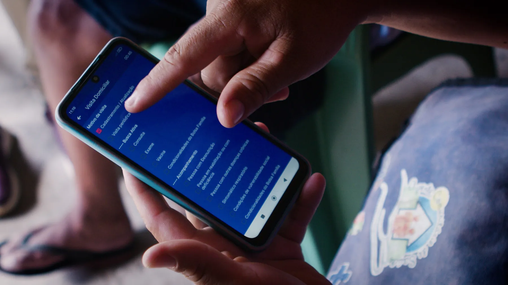
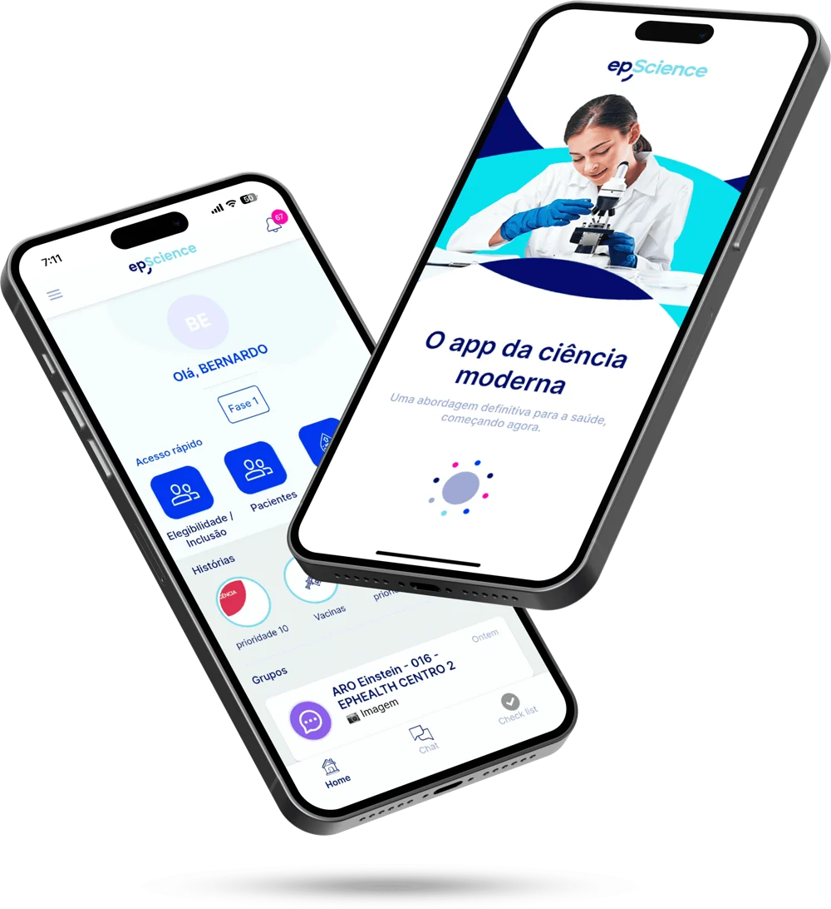

Inteligência aplicada à saúde de grandes populações.
Da visita do agente comunitário à evidência científica: dados de mundo real, estudos clínicos digitais e campanhas em escala nacional.

12 anos de registros que viram evidência
Fonte: The Rise of Brazil's Primary Care Digitalization (medRxiv, 2026), com dados do SISAB.
Muito além da tecnologia
Cinco frentes que se somam — do desenho do estudo à captura do dado, da campanha nacional à consultoria.

Real-World Evidence
Estudos de mundo real para apoiar políticas públicas, decisões clínicas e estratégias em saúde.
Saiba mais
Intervenções digitais
Jornadas digitais que ampliam o acesso, aceleram diagnósticos e fortalecem a equidade.
Saiba mais
Campanhas de conscientização
Campanhas digitais com alcance nacional para educação em saúde da população.
Saiba mais
Captura eletrônica de dados
Plataforma para estudos clínicos com agilidade, qualidade e conformidade regulatória.
Saiba mais
Consultoria especializada
Médicos-pesquisadores, desenvolvedores e gestores com experiência em saúde pública.
Saiba mais
O dado nasce em cada visita domiciliar
Trabalhamos lado a lado com os agentes comunitários de saúde, que conhecem cada família do território. É a partir desse trabalho que a informação ganha qualidade e escala.
- Cadastro qualificadoBases municipais corrigidas e atualizadas com apoio digital.
- Acompanhamento contínuoLinhas de cuidado como hipertensão e diabetes monitoradas no território.
- Ciência com éticaEstudos aprovados pelo sistema CEP/CONEP.




Uma plataforma para todo o estudo clínico
Pacientes, centros de pesquisa e coordenação integrados em um só ambiente, com notificações automáticas para cada atividade crítica.
- Centro coordenadorMonitoramento remoto em tempo real, queries e SDV.
- Sites participantesTelehealth, chat, medicamentos e eCRF.
- Engajamento do pacienteOnline e presencial, eConsent e vídeo educativo.
Publicações
Produção científica com alcance internacional e impacto na saúde pública.
Estudos registrados
Registrados no ClinicalTrials.gov e aprovados pelo sistema de ética em pesquisa do Brasil.
CLEAR-HTN
15.000participantes previstos
Padrões de tratamento da hipertensão na atenção primária pública. Observacional.
Ver no ClinicalTrials.govSAPPHIRE-LDL
1.465pacientes em 28 clínicas
Intervenção digital no controle do LDL. Ensaio randomizado por cluster.
Ver no ClinicalTrials.govRWE-Statins
2,1 milhõesparticipantes (2.133.900)
Evidência de mundo real sobre o uso de estatinas no Brasil.
Ver no ClinicalTrials.govEstudos aprovados pelo sistema CEP/CONEP (5)
| epCertify Hiperdia | Hipertensão e diabetes · Hospital Moinhos de Vento | 16/12/2025 |
| COVID-19 ACS Brasil | Rastreio de sintomas respiratórios pelos agentes comunitários · Hospital Israelita Albert Einstein | 28/09/2022 |
| AVC ACS Brasil | Perfil de pessoas com AVC e acesso à reabilitação na ESF · Hospital Israelita Albert Einstein | 23/05/2022 |
| ICHealth | Perfil de pessoas com insuficiência cardíaca assistidas pela ESF | 13/10/2020 |
| DPOC ACS Brasil | Perfil de pessoas com DPOC assistidas pela ESF · Hospital Israelita Albert Einstein | 30/04/2020 |
A aprovação pode ser verificada em plataformabrasil.saude.gov.br (Público › Confirmar aprovação pelo CAAE ou parecer).
Onde apresentamos nossos resultados

Universidade de Cambridge

Congresso Europeu de Cardiologia

Congresso Americano de Cardiologia
Primary Care Insights
Reports com panoramas nacionais da atenção primária brasileira, feitos a partir de dados públicos do SUS.
Vamos conversar sobre o seu próximo estudo
Conte o que você precisa. Nosso time de pesquisa, tecnologia e saúde pública responde em até 2 dias úteis.